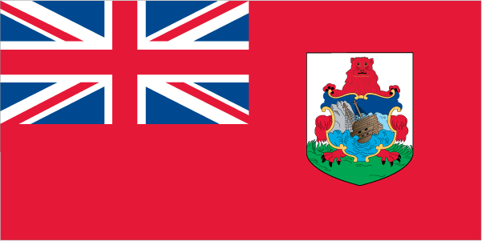

North America :: BERMUDA
Introduction :: BERMUDA
-
Bermuda was first settled in 1609 by shipwrecked English colonists heading for Virginia. Self-governing since 1620, Bermuda is the oldest and most populous of the British overseas territories. Vacationing to the island to escape North American winters first developed in Victorian times. Tourism continues to be important to the island's economy, although international business has overtaken it in recent years. Bermuda has also developed into a highly successful offshore financial center. A referendum on independence from the UK was soundly defeated in 1995.
Geography :: BERMUDA
-
North America, group of islands in the North Atlantic Ocean, east of South Carolina (US)32 20 N, 64 45 WNorth Americatotal: 54 sq kmland: 54 sq kmwater: 0 sq kmcountry comparison to the world: 233about one-third the size of Washington, DC0 km103 kmterritorial sea: 12 nmexclusive fishing zone: 200 nmsubtropical; mild, humid; gales, strong winds common in winterlow hills separated by fertile depressionsmean elevation: NAelevation extremes: lowest point: Atlantic Ocean 0 mhighest point: Town Hill 79 mlimestone, pleasant climate fostering tourismagricultural land: 14.8%arable land 14.8%; permanent crops 0%; permanent pasture 0%forest: 20%other: 65.2% (2011 est.)NArelatively even population distribution throughouthurricanes (June to November)dense population and heavy vehicle traffic create serious pollution problems; water resources scarce (most obtained as rainwater or from wells); there is no sewage treatment on the islandconsists of about 138 coral islands and islets with ample rainfall, but no rivers or freshwater lakes; some land was leased by the US Government from 1941 to 1995
People and Society :: BERMUDA
-
70,864 (July 2017 est.)country comparison to the world: 203noun: Bermudian(s)adjective: Bermudianblack 53.8%, white 31%, mixed 7.5%, other 7.1%, unspecified 0.6% (2010 est.)English (official), PortugueseProtestant 46.2% (includes Anglican 15.8%, African Methodist Episcopal 8.6%, Seventh Day Adventist 6.7, Pentecostal 3.5%, Methodist 2.7%, Presbyterian 2.0%, Church of God 1.6%, Baptist 1.2%, Salvation Army 1.1%, Brethren 1.0%, other Protestant 2.0%), Roman Catholic 14.5%, Jehovah's Witness 1.3%, other Christian 9.1%, Muslim 1%, other 3.9%, none 17.8%, unspecified 6.2% (2010 est.)0-14 years: 17.04% (male 6,104/female 5,974)15-24 years: 12% (male 4,300/female 4,207)25-54 years: 37.24% (male 13,230/female 13,163)55-64 years: 15.73% (male 5,244/female 5,902)65 years and over: 17.98% (male 5,395/female 7,345) (2017 est.)total: 43.4 yearsmale: 41.5 yearsfemale: 45.3 years (2017 est.)country comparison to the world: 180.45% (2017 est.)country comparison to the world: 15511.3 births/1,000 population (2017 est.)country comparison to the world: 1738.6 deaths/1,000 population (2017 est.)country comparison to the world: 751.8 migrant(s)/1,000 population (2017 est.)country comparison to the world: 51relatively even population distribution throughouturban population: 100% of total population (2017)rate of urbanization: 0.16% annual rate of change (2015-20 est.)HAMILTON (capital) 10,000 (2014)at birth: 1.02 male(s)/female0-14 years: 1.02 male(s)/female15-24 years: 1.01 male(s)/female25-54 years: 1 male(s)/female55-64 years: 0.89 male(s)/female65 years and over: 0.73 male(s)/femaletotal population: 0.94 male(s)/female (2016 est.)total: 2.5 deaths/1,000 live birthsmale: 2.6 deaths/1,000 live birthsfemale: 2.4 deaths/1,000 live births (2017 est.)country comparison to the world: 219total population: 81.4 yearsmale: 78.2 yearsfemale: 84.6 years (2017 est.)country comparison to the world: 261.93 children born/woman (2017 est.)country comparison to the world: 129NANANA1.7% of GDP (2015)country comparison to the world: 151total: 12 yearsmale: 11 yearsfemale: 12 years (2015)total: 29.3%male: 29.7%female: 29% (2014 est.)
Government :: BERMUDA
-
conventional long form: noneconventional short form: Bermudaformer: Somers Islandsetymology: the islands making up Bermuda are named after Juan de BERMUDEZ, an early 16th century Spanish sea captain and the first European explorer of the archipelagooverseas territory of the UKparliamentary democracy (Parliament); self-governing overseas territory of the UKname: Hamiltongeographic coordinates: 32 17 N, 64 47 Wtime difference: UTC-4 (1 hour ahead of Washington, DC, during Standard Time)daylight saving time: +1hr, begins second Sunday in March; ends first Sunday in November9 parishes and 2 municipalities*; Devonshire, Hamilton, Hamilton*, Paget, Pembroke, Saint George*, Saint George's, Sandys, Smith's, Southampton, Warwicknone (overseas territory of the UK)Bermuda Day, 24 May; note - formerly known as Victoria Day, Empire Day, and Commonwealth Dayseveral previous (dating to 1684); latest entered into force 8 June 1968; amended several times, last in 2012 (2017)English common lawhas not submitted an ICJ jurisdiction declaration; non-party state to the ICCtcitizenship by birth: nocitizenship by descent only: at least one parent must be a citizen of the UKdual citizenship recognized: yesresidency requirement for naturalization: 10 years18 years of age; universalchief of state: Queen ELIZABETH II (since 6 February 1952); represented by Governor John RANKIN (since 5 December 2016)head of government: Premier David BURT (since 19 July 2017)cabinet: Cabinet nominated by the premier, appointed by the governorelections/appointments: the monarchy is hereditary; governor appointed by the monarch; following legislative elections, the leader of the majority party or majority coalition usually appointed premier by the governordescription: bicameral Parliament consists of the Senate (11 seats; 3 members appointed by the governor, 5 by the premier, and 3 by the opposition party; members serve 5-year terms) and the House of Assembly (36 seats; members directly elected in single-seat constituencies by simple majority vote to serve up to 5-year terms)elections: last held on 18 July 2017 (next to be held not later than 2022)election results: percent of vote by party - PLP 58.9%, OBA 40.6%, other 0.5%; seats by party - PLP 24, OBA 12highest resident court(s): Court of Appeal (consists of the court president and at least 2 justices); Supreme Court (consists of the chief justice, 4 puisne judges, and 1 associate justice); note - the Judicial Committee of the Privy Council in London is the court of final appealjudge selection and term of office: Court of Appeal justice appointed by the governor; justice tenure by individual appointment; Supreme Court judges nominated by the Judicial and Legal Services Commission and appointed by the governor; judge tenure based on terms of appointmentsubordinate courts: commercial court (began in 2006); magistrates' courtsOne Bermuda Alliance or OBA [interim leader, Patricia GORDON-PAMPLIN]Progressive Labor Party or PLP [David BURT]Association of Bermuda Insurers and Reinsurers or ABIR [Bradley KADING]Association of Bermuda International Companies or ABIC [Patrick TANNOCK]Bermuda Employers' Council [Keith JENSEN]Bermuda Industrial Union or BIU [Chris FURBERT]Bermuda Public Services Union or BPSU [Kevin GRANT, Edward G. BALL, Jr.]Bermuda Union of Teachers [Michael CHARLES]Caricom (associate), ICC (NGOs), Interpol (subbureau), IOC, ITUC (NGOs), UPU, WCOnone (overseas territory of the UK)chief of mission: Consul General Mary Ellen KOENIG (since 28 November 2015)consulate(s) general: Crown Hill, 16 Middle Road, Devonshire DVO3mailing address: P. O. Box HM325, Hamilton HMBX; American Consulate General Hamilton, US Department of State, 5300 Hamilton Place, Washington, DC 20520-5300telephone: [1] (441) 295-1342FAX: [1] (441) 295-1592, 296-9233red, with the flag of the UK in the upper hoist-side quadrant and the Bermudian coat of arms (a white shield with a red lion standing on a green grassy field holding a scrolled shield showing the sinking of the ship Sea Venture off Bermuda in 1609) centered on the outer half of the flag; it was the shipwreck of the vessel, filled with English colonists originally bound for Virginia, that led to the settling of Bermudanote: the flag is unusual in that it is only British overseas territory that uses a red ensign, all others use bluered lionname: "Hail to Bermuda"lyrics/music: Bette JOHNSnote: serves as a local anthem; as a territory of the United Kingdom, "God Save the Queen" is official (see United Kingdom)
Economy :: BERMUDA
-
Tourism accounts for about 5% of Bermuda's GDP, but a much larger share of employment. Over 80% of its visitors come from the US. The sector struggled in the wake of the global recession of 2008-09. International business, which consists primarily of reinsurance and other financial services, is the real bedrock of Bermuda's economy, consistently accounting for about 85% of the island's GDP. Even this sector, however, has lost roughly 5,000 high-paying expatriate jobs since 2008, weighing heavily on household consumption and retail sales. Bermuda must import almost everything. Agriculture and industry are limited due to the small size of the island.Bermuda's economy entered its seventh straight year of recession in 2015. Unemployment is 9%, public debt is growing and exceeds $2.3 billion, the government pension fund faces a $2.4 billion shortfall, and the economy has not attracted significant new foreign investment. Bermuda's FY15/16 budget projects a 12% larger deficit than FY14/15. The government announced it would borrow $125 million in 2015 to meet current operating expenses. Still, Bermuda enjoys the fourth highest per capita income in the world, about 70% higher than that of the US.$5.198 billion (2013 est.)$5.331 billion (2012 est.)$5.6 billion (2011 est.)country comparison to the world: 171$5.198 billion (2013 est.)-2.5% (2013 est.)-4.8% (2012)-3.5% (2011 est.)country comparison to the world: 206$85,700 (2013 est.)$85,400 (2012 est.)$86,000 (2011 est.)country comparison to the world: 8household consumption: 53.7%government consumption: 16.3%investment in fixed capital: 12.9%investment in inventories: 0%exports of goods and services: 49.9%imports of goods and services: -32.7% (2016 est.)agriculture: 0.8%industry: 5.8%services: 93.4% (2016 est.)bananas, vegetables, citrus, flowers; dairy products, honeyinternational business, tourism, light manufacturing2% (2016 est.)country comparison to the world: 10533,490 (2014 est.)country comparison to the world: 203agriculture: 2%industry: 15%services: 83% (2013 est.)9% (2014 est.)7% (2013)country comparison to the world: 11611% (2008 est.)lowest 10%: NA%highest 10%: NA%revenues: $955.7 millionexpenditures: $1.126 billion (2016 est.)18.4% of GDP (2016 est.)country comparison to the world: 166-3.3% of GDP (2016 est.)country comparison to the world: 12843% of GDP (FY14/15)country comparison to the world: 1231 April - 31 March1.4% (2016 est.)1.4% (2015 est.)country comparison to the world: 106$3.374 billion (30 September 2014 est.)$3.422 billion (31 December 2013 est.)note: figures do not include US dollars, which also circulate freelycountry comparison to the world: 114$22.1 billion (30 September 2014 est.)$25.1 billion (31 December 2013 est.)country comparison to the world: 86$NA$1.85 billion (31 December 2015 est.)$1.601 billion (31 December 2014 est.)$1.467 billion (31 December 2013 est.)country comparison to the world: 101$19 million (2016 est.)$20 million (2015 est.)country comparison to the world: 214reexports of pharmaceuticalsLatvia 33.4%, Jamaica 16.6%, US 13.7%, Nigeria 11.7%, Israel 4.7% (2016)$951 million (2016 est.)$935 million (2015 est.)country comparison to the world: 183clothing, fuels, machinery and transport equipment, construction materials, chemicals, food and live animalsUS 54.2%, Japan 17.9%, South Korea 13.7%, Canada 4.9% (2016)$2.435 billion (2015 est.)$1.4 billion (2012 est.)country comparison to the world: 147$2.641 billion (2014 est.)$2.664 billion (2013 est.)country comparison to the world: 112$889 million (2014 est.)$NA (2013 est.)country comparison to the world: 86Bermudian dollars (BMD) per US dollar -1 (2016 est.)1 (2015 est.)1 (2014 est.)1 (2013 est.)1 (2012 est.)
Energy :: BERMUDA
-
electrification - total population: 100% (2016)662 million kWh (2015 est.)country comparison to the world: 160615.7 million kWh (2015 est.)country comparison to the world: 1670 kWh (2016 est.)country comparison to the world: 1050 kWh (2016 est.)country comparison to the world: 123171,000 kW (2015 est.)country comparison to the world: 167100% of total installed capacity (2015 est.)country comparison to the world: 220% of total installed capacity (2015 est.)country comparison to the world: 480% of total installed capacity (2015 est.)country comparison to the world: 1630% of total installed capacitynote: the Tynes Bay Waste Treatment Facility turns waste to electric energy (2015 est.)country comparison to the world: 2130 bbl/day (2016 est.)country comparison to the world: 1090 bbl/day (2014 est.)country comparison to the world: 930 bbl/day (2014 est.)country comparison to the world: 980 bbl (1 January 2017 es)country comparison to the world: 1090 bbl/day (2014 est.)country comparison to the world: 1193,300 bbl/day (2015 est.)country comparison to the world: 1850 bbl/day (2014 est.)country comparison to the world: 1332,968 bbl/day (2014 est.)country comparison to the world: 1800 cu m (2014 est.)country comparison to the world: 1070 cu m (2013 est.)country comparison to the world: 1570 cu m (2013 est.)country comparison to the world: 670 cu m (2014 est.)country comparison to the world: 900 cu m (1 January 2014 es)country comparison to the world: 114600,000 Mt (2013 est.)country comparison to the world: 174
Communications :: BERMUDA
-
total subscriptions: 29,200subscriptions per 100 inhabitants: 42 (July 2016 est.)country comparison to the world: 173total: 59,500subscriptions per 100 inhabitants: 85 (July 2016 est.)country comparison to the world: 201general assessment: a good, fully automatic digital telephone system with fiber-optic trunk linesdomestic: the system has a high fixed-line teledensity coupled with a mobile-cellular teledensity of roughly 125 per 100 personsinternational: country code - 1-441; landing points for the GlobeNet, Gemini Bermuda, CBUS, and the Challenger Bermuda-1 (CB-1) submarine cables; satellite earth stations - 3 (2015)3 TV stations; cable and satellite TV subscription services are available; roughly 13 radio stations operating (2012).bmtotal: 69,126percent of population: 98.0% (July 2016 est.)country comparison to the world: 179
Transportation :: BERMUDA
-
VP-B (2016)1 (2013)country comparison to the world: 212total: 12,438 to 3,047 m: 1 (2017)total: 447 kmpaved: 447 kmnote: 225 km public roads; 222 km private roads (2010)country comparison to the world: 198total: 139by type: bulk carrier 22, chemical tanker 3, container 14, liquefied gas 43, passenger 27, passenger/cargo 2, petroleum tanker 19, refrigerated cargo 9foreign-owned: 105 (France 1, Germany 14, Greece 8, Hong Kong 4, Ireland 1, Israel 3, Japan 2, Monaco 2, Nigeria 11, Norway 5, Sweden 14, UK 14, US 26)registered in other countries: 241 (Bahamas 15, Cyprus 1, France 5, Greece 3, Hong Kong 20, Isle of Man 7, Liberia 4, Malta 15, Marshall Islands 35, Netherlands 1, Norway 24, Panama 27, Philippines 47, Saint Vincent and the Grenadines 1, Singapore 25, UK 6, US 5) (2010)country comparison to the world: 42major seaport(s): Hamilton, Ireland Island, Saint George
Military and Security :: BERMUDA
-
Bermuda Regiment (2012)18-45 years of age for voluntary male or female enlistment in the Bermuda Regiment; males must register at age 18 and may be subject to conscription; term of service is 38 months for volunteers or conscripts (2012)defense is the responsibility of the UK
Transnational Issues :: BERMUDA
-
none